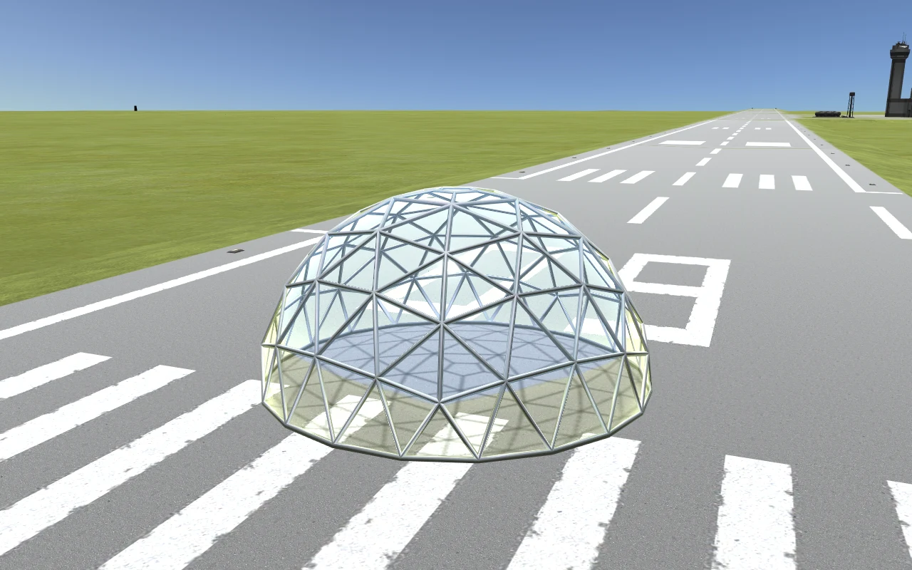
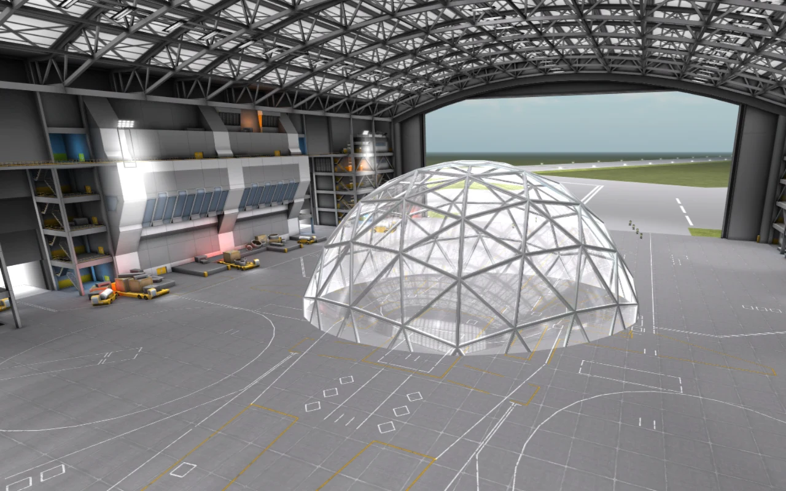
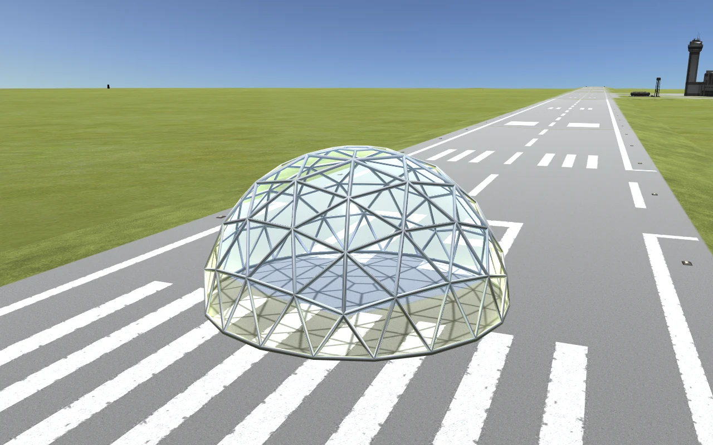
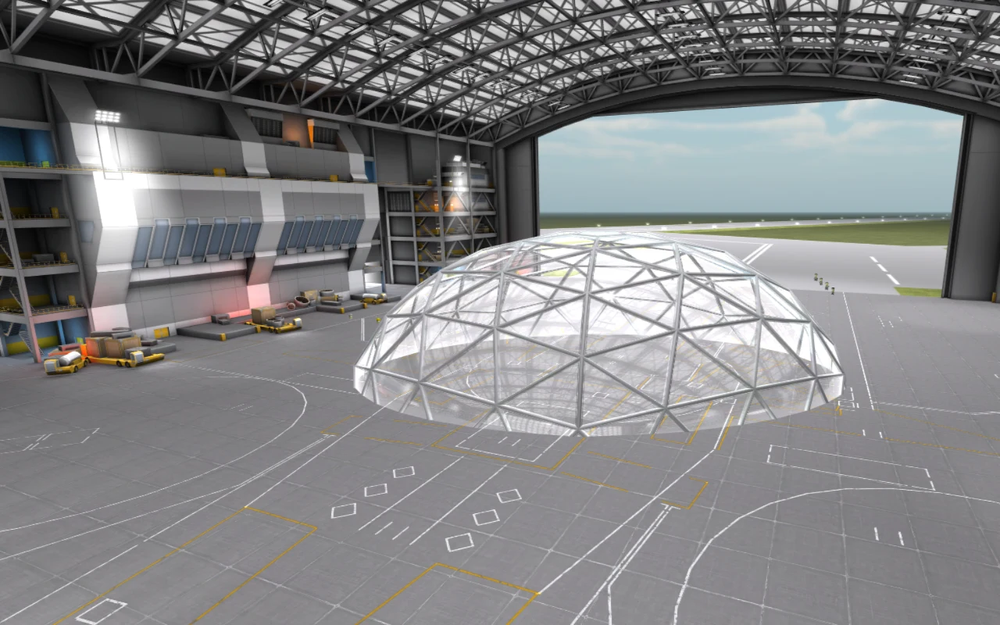
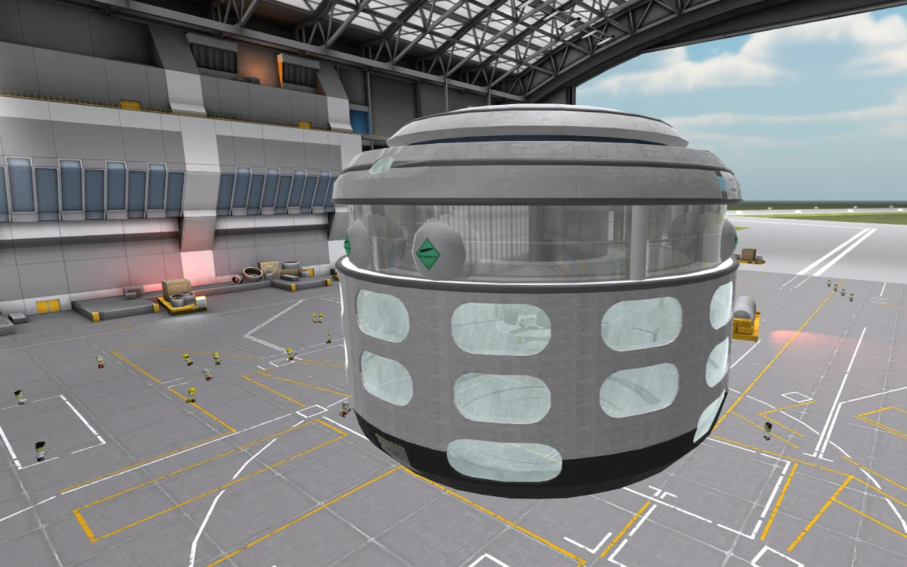
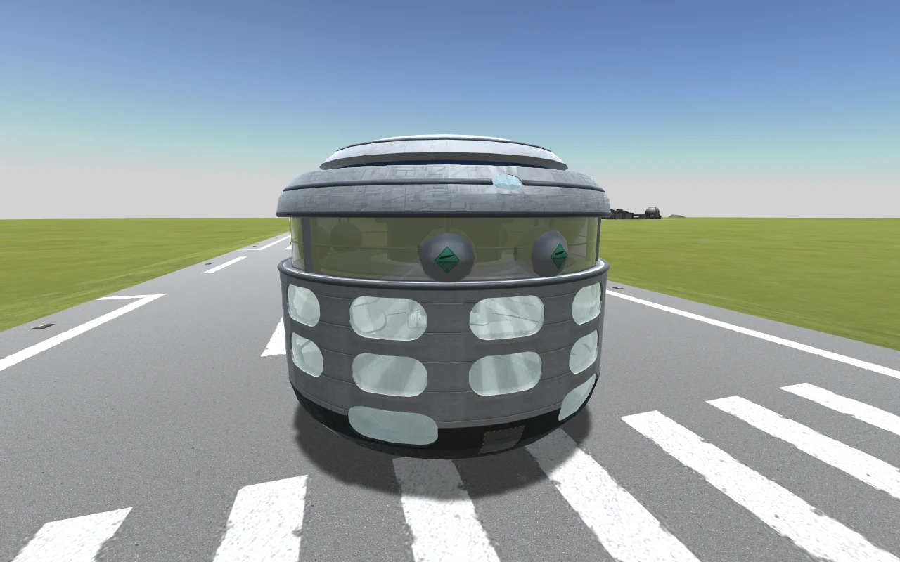
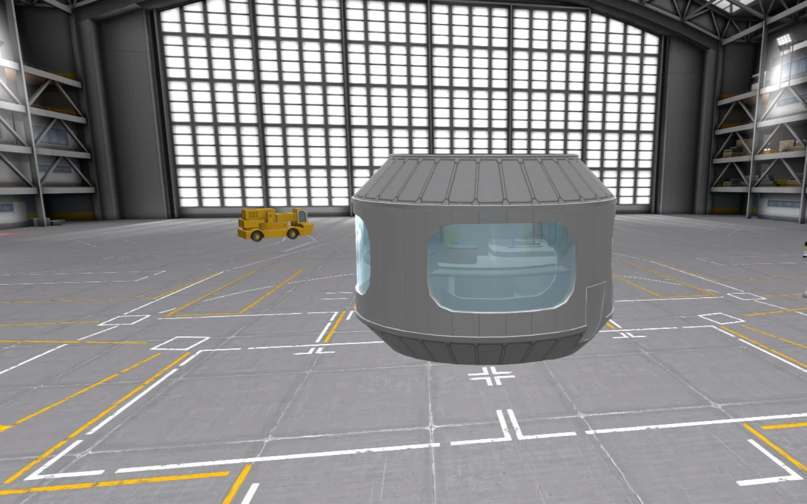
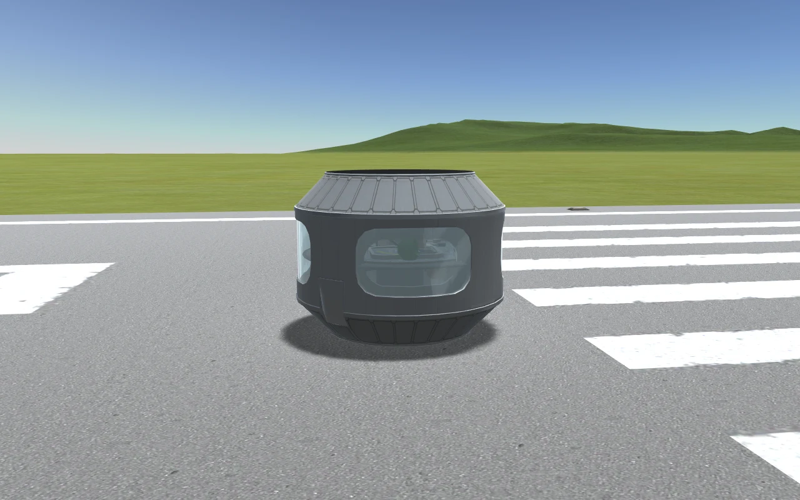
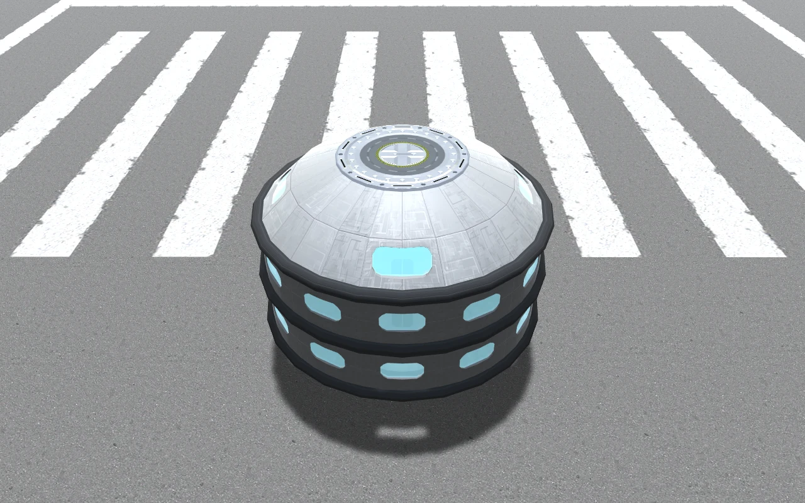
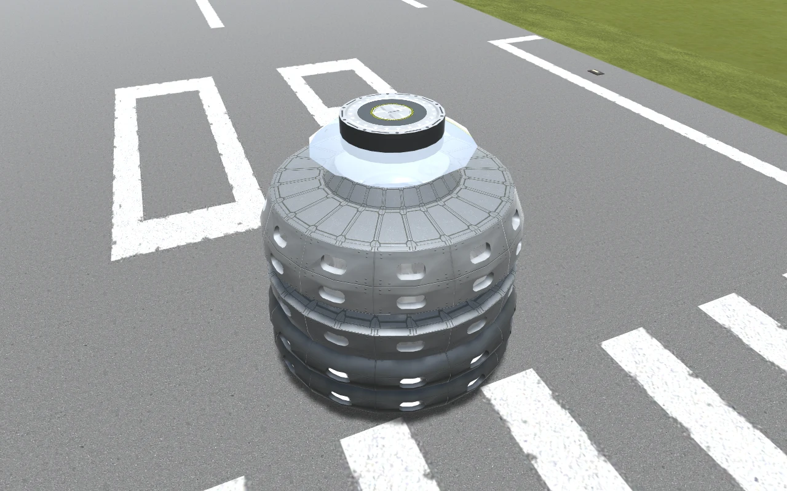

Biosphere Containment Dome


Biosphere Containment Dome (Large)


Biosphere Containment Dome (Wide)


Civilian Contractor Dock Mk1
Civilian Large Apartment Complex


Civilian Large House mk2


Civilian Small Apartment Complex


Netherdyne Flight School
Netherdyne University

